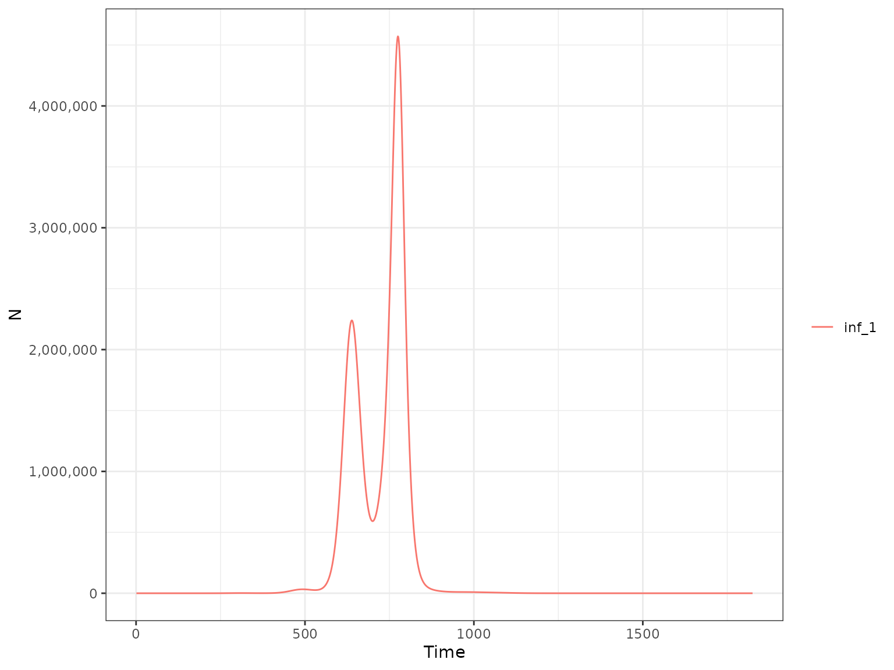
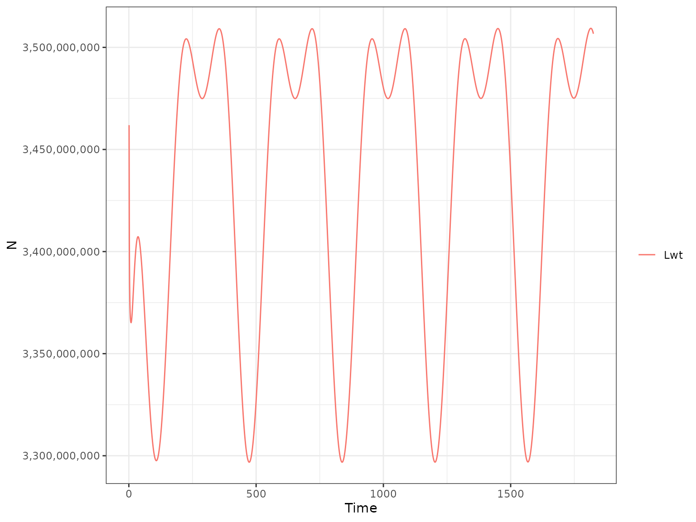
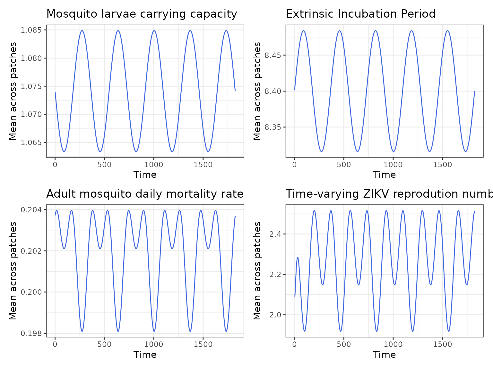

Add the effect of seasonality
Source:vignettes/deterministic_seasonal.Rmd
deterministic_seasonal.RmdSeasonality
The model allows to account for the effect of seasonal variations in climatic variables (e.g. temperature and precipitation) on Zika transmission dynamics. In the model, seasonality affects:
- adult mosquitoes mortality;
- mosquito larvae carrying capacity;
- Extrinsic Incubation Period.
The magnitude and timing of seasonal variations in each patch are described by the amplitude and phase parameters, which were chosen to mimic the seasonality of dengue transmission in Latin America. A 4 x 5 patch structure was assumed with 8 patches above the equators (strong seasonality and peak at the start of the year), 4 at the equator (weak seasonality) and 8 below the equator (strong seasonality and peak in the middle of each year) (Figure 1).

Figure 1. Schematic of the model patch structure in relation to seasonality.
A deterministic model which includes the effect of seasonality can be implemented by setting to TRUE the season argument of run_deterministic_model().
library(ZikaModel) r1 <- run_deterministic_model(time_period = 365 * 5, season = TRUE)
Now we plot the model human compartments:
plot(r1, type = "H")
and the mosquito compartments:
plot(r1, type = "M")
The dynamics look more jagged compared to the baseline model due to the effect of seasonality on transmission which makes them jumping more up and down. Let’s plot other diagnostics:
plot(r1, type = "H", var_select = "inf_1")

plot(r1, type = "H", var_select = "MC")
plot(r1, type = "M", var_select = "Lwt")

Finally, we also plot the variables directly modified by seasonality (average across patches).
library(ggplot2) library(patchwork) Kc <- format_output_M(r1, var_select = "Kc") Kc_p <- ggplot(Kc, aes(x = t, y = y)) + geom_line(color = 'royalblue', size = 0.5) + scale_x_continuous("Time") + scale_y_continuous("Mean across patches") + ggtitle("Mosquito larvae carrying capacity") + theme_bw() eip <- format_output_M(r1, var_select = "eip") eip_p <- ggplot(eip, aes(x = t, y = y)) + geom_line(color = 'royalblue', size = 0.5) + scale_x_continuous("Time") + scale_y_continuous("Mean across patches") + ggtitle("Extrinsic Incubation Period") + theme_bw() delta <- format_output_M(r1, var_select = "Delta") delta_p <- ggplot(delta, aes(x = t, y = y)) + geom_line(color = 'royalblue', size = 0.5) + scale_x_continuous("Time") + scale_y_continuous("Mean across patches") + ggtitle("Adult mosquito daily mortality rate") + theme_bw() Rt <- format_output_M(r1, var_select = "R0t_1") Rt_p <- ggplot(Rt, aes(x = t, y = y)) + geom_line(color = 'royalblue', size = 0.5) + scale_x_continuous("Time") + scale_y_continuous("Mean across patches") + ggtitle("Time-varying ZIKV reprodution number") + theme_bw() all <- Kc_p + eip_p + delta_p + Rt_p all
